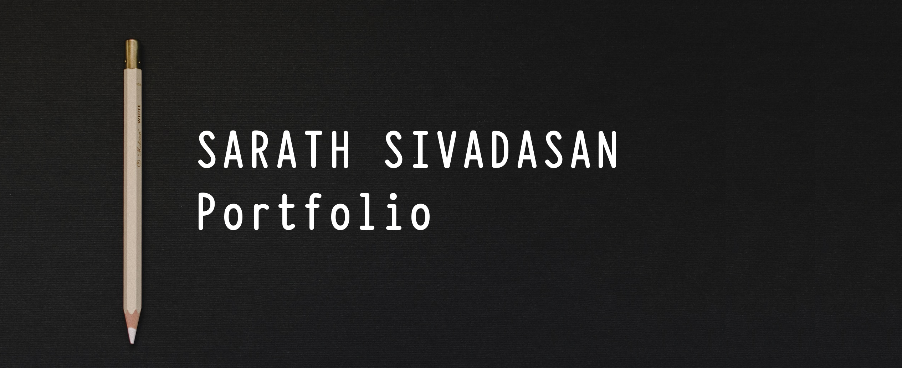

About Myself
Born on 1987, to Mr. Sivadasan Narayanan and Mrs. Sailaja Kesavan, in Kadakkavur,
a small village in the state of Kerala, India. Kerala has a very rich and diverse culture.
The state is very beautiful with lush greenery, pristine beaches, backwaters, mountains, waterfalls etc.
The state itself is called as "God's Own Country".